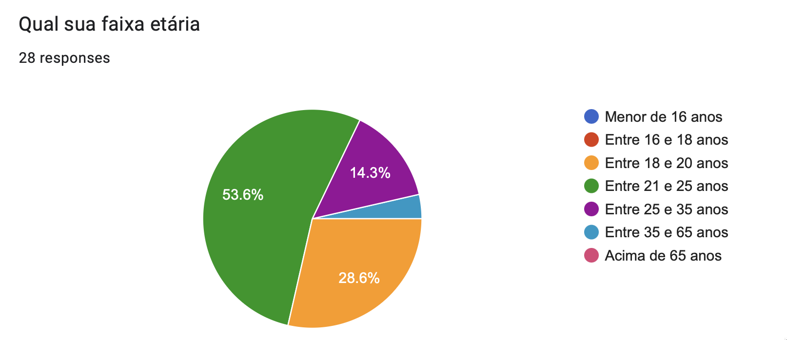
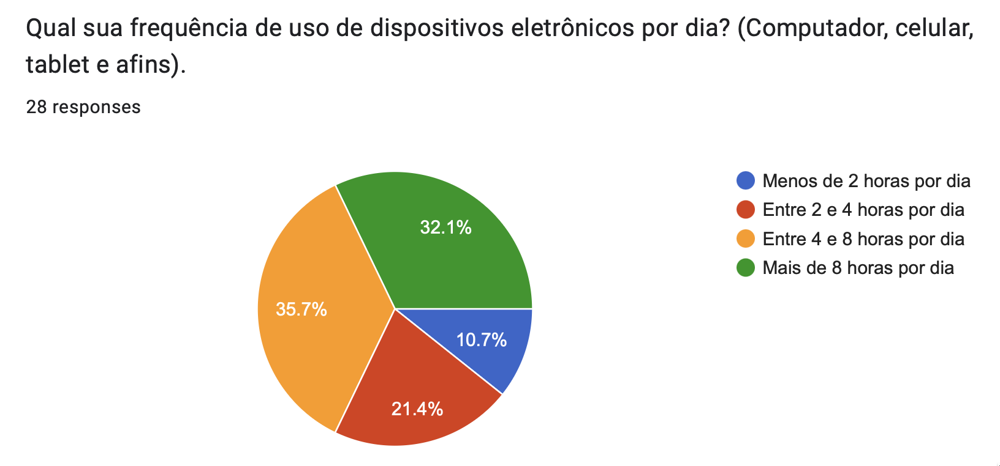
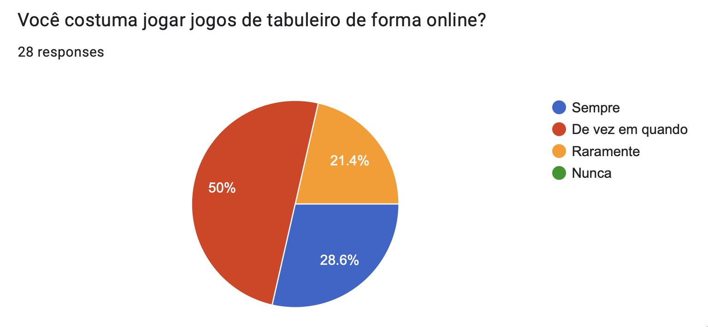
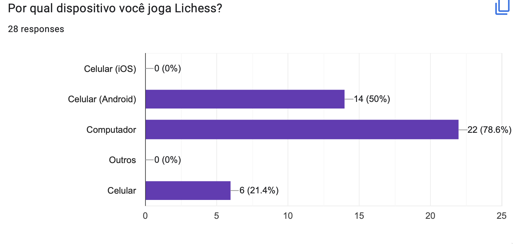
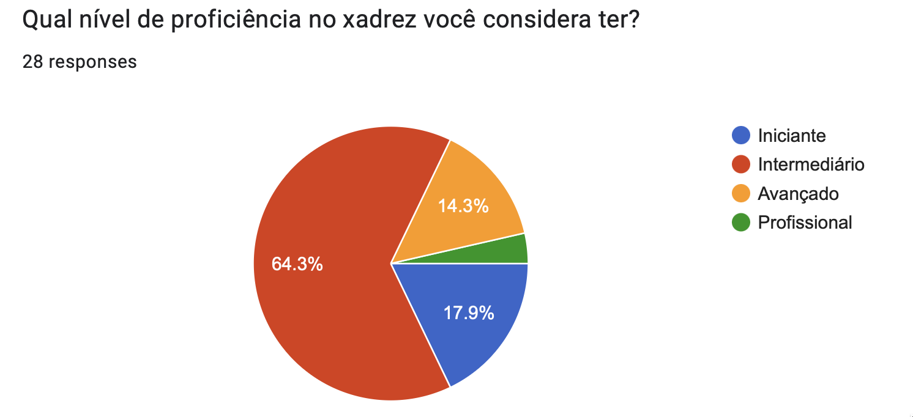
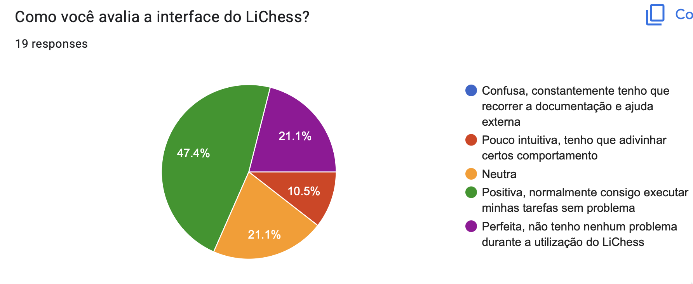
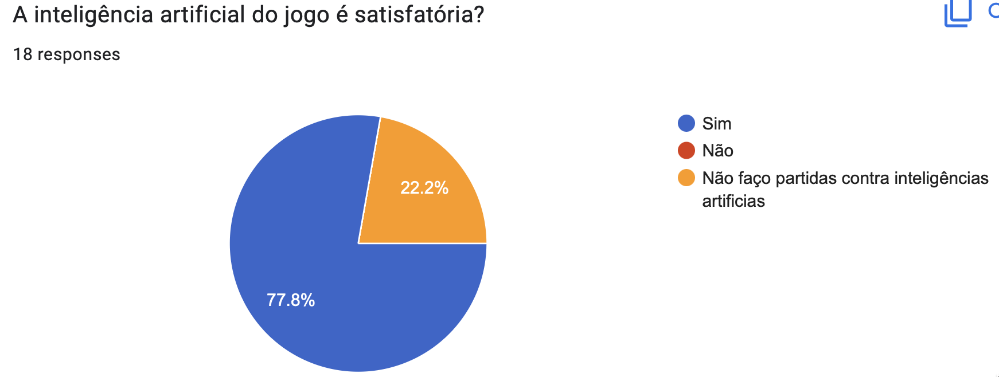
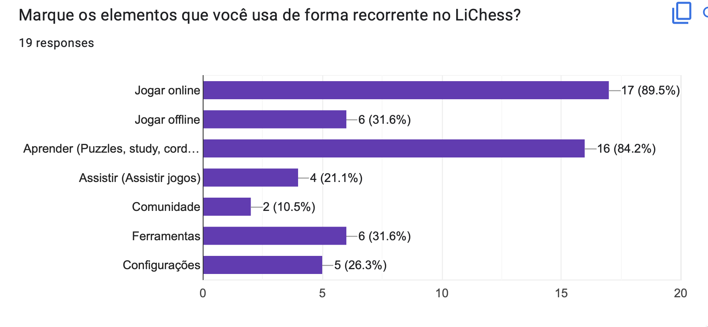

Questionário
Introdução
Formulário com o objetivo de colher informações sobre o usuário e sua experiência em determinado contexto do seu cliente. Sua distinção de uma entrevista, é a redução de custo e possibilidade de realização para diversas regiões simultaneamente.
Durante a construção do formulário deve-se ter a noção do público-alvo, caso não esteja bem definido generalize. Evite restrições de público-alvo sem um bom porquê.
Vantagens
- Técnica relativamente rápida e barata de ser aplicada.
- Obtém de maneira mais fácil informações de um público numeroso.
- Em geral não demanda tanto tempo dos respondentes como em uma entrevista.
- Muito útil quando o público-alvo está disperso geograficamente.
- Quando aplicado a uma amostra representativa das partes interessadas, permite representar as opiniões de toda a população.
- As questões com respostas limitadas são muito efetivas para a geração de dados quantitativos para análise estatística.
Desvantagens
- Se a taxa de resposta for baixa, o resultado pode não ser estatisticamente significativo.
- Uma falha na elaboração do questionário pode levar a respostas em branco ou incorretas, ou também gerar interpretações distintas da mesma pergunta, o que pode levar a erros nos requisitos.
- O uso de questões com respostas ilimitadas demanda mais esforço de análise das respostas, se o público for numeroso.
Resultados coletados
A seguir iremos mostrar os resultados coletados para cada questão do formulário. O formulário conta com 52 respostas, antes da coleta os usuários aceitaram o nosso termo consentimento A fim de conhecer apenas o público que já utiliza o aplicativo foi estabelecida uma pesquisa de filtragem. Assim das 52 respostas coletadas apenas 28 usam o LiChess seja via site ou aplicativo. Respostas foram coletadas entre as datas 20/11/2022 e 24/11/2022.
Questão 1

Figura 1: Pergunta 1 (Fonte: autor, 2022).
Questão 2

Figura 2: Pergunta 2 (Fonte: autor, 2022).
Questão 3
Na Tabela Respostas Pergunta 3, estão listadas as resposta diretas do nosso usuário, sem edição e/ou correção ortográfica.
| Descreva um dia agradável para você |
|---|
| Um dia que já fiz todas minhas responsabilidades, sai com meus amigos d tarde e d noite consigo jogar alguma coisa (muitas vezes xadrez). |
| Em que tudo da certo e eu consigo fazer as coisas no horário certo e da forma mais maneira |
| Um dia em que eu possa realizar minhas responsabilidades e ter tempo satisfatório pra lazer e descanso. Mas também pode ser um dia com muitas e diferentes responsabilidades contanto que eu consiga fazer todas e consiga ter um bom desempenho nelas. |
| Acordar sem sono kkk tomar um café, não atrasar pra pegar o ônibus, ir lendo ou ouvindo música pelo celular até chegar na faculdade, ter aulas de manhã e de tarde de assuntos que gosto, voltar pra casa, terminar exercícios e ficar jogando no computador até ir dormir. |
| Com tempo para hobbies e ócio |
| Um dia com: sono satisfatório, interação social, exercício físico e realização das tarefas. |
| Um dia sem trabalho e cobrança da faculdade. |
| Um dia sem preocupações |
| Um dia agradável consiste em eu conseguir realizar minha rotina de estudos com um bom desempenho |
| Dias onde eu possa fazer as coisas que eu tenha vontade. |
| Eu acordo, estudo, como, dou aula, estudo mais um pouco e vou dormir. |
| Depois das 17h quando chego do trabalho |
| Um dia em que eu consiga cumprir com minhas obrigações com tranquilidade e aproveitar meus hobbies ao fim do dia. |
| Sair com os amigos para beber |
| Acordar às 10h, amassar meu doguinho num abraço e jogar algo no computador. |
Tabela 1: Respostas da pergunta 3. (Fonte: autor, 2022).
Questão 4
Na Tabela Respostas Pergunta 4, estão listadas as resposta diretas do nosso usuário, sem edição e/ou correção ortográfica.
| Quais jogos de tabuleiro você mais gosta? |
|---|
| Xadrez |
| Gosto de xadrez, war e interpol. Entre outros |
| Xadrez, Puerto rico, the resistance |
| Xadrez, perfil, war, monopoly, |
| Dungeons&Dragons, Xadrez, Munchkin, Catan/War, e alguns de baralho. |
| xadrez e damas |
| Xadrez, Splendor, Puerto Rico, Go e Fanorona |
| Xadrez, war, ticket to ride, coupe, dixit |
| Catan, Quest |
| Xadrez, war, zombicide |
| Ticket to ride |
| Xadrez e war |
| Xadrez, damas |
Tabela 2: Respostas da pergunta 4. (Fonte: autor, 2022).
Questão 5

Figura 3: Pergunta 5 (Fonte: autor, 2022).
Questão 6

Figura 6: Pergunta 6 (Fonte: autor, 2022).
Questão 7
| Qual a frequência que você joga LiChess? | Votos | Porcentagem |
|---|---|---|
| Mais de uma vez por dia | 1 | 3,6% |
| 1 vez por dia | 9 | 32% |
| 1 vez por semana | 5 | 18% |
| 2 vez por semana | 3 | 10,7% |
| 3 vez por semana | 2 | 7,1% |
| 1 vez por mês | 2 | 7,1% |
| 1 vez a cada 2 meses | 2 | 7,1% |
| Outros | 4 | 14,3% |
Tabela 3: Respostas da pergunta 7. (Fonte: autor, 2022).
Questão 8

Figura 4: Pergunta 8 (Fonte: autor, 2022).
Questão 9
| Qual seu tempo médio de uso do LiChess antes de ficar cansado? | Votos | Porcentagem |
|---|---|---|
| Até 30 minutos | 5 | 26,3% |
| Entre 30 e 60 minutos | 4 | 21,05% |
| Entre 1 e 2 horas | 4 | 21,05% |
| Entre 2 e 3 horas | 2 | 10,55% |
| Mais de 3 horas | 4 | 21,05% |
Tabela 4: Respostas da pergunta 9. (Fonte: autor, 2022).
Questão 10

Figura 5: Pergunta 10 (Fonte: autor, 2022).
Questão 11

Figura 6: Pergunta 11 (Fonte: autor, 2022).
Questão 12

Figura 7: Pergunta 12 (Fonte: autor, 2022).
Questão 13
| Você tem algum feedback sobre como site Lichess pode dar uma experiência melhor para o usuário? |
|---|
| Não |
| Acho que a interface poderia ser mas clean |
| Acho que torneios online seria bem legal |
| O app mobile não possui puzzle streak. |
| melhorias visuais |
| Maior facilidade para encontrar partidas ao vivo de torneios |
| Acho q o principal é rating q é meio off, mas ai precisa ter uma comunidade mais ativa o que n da pra resolver facilmente. Fora isso a interface é um pouco confusa mas dps vc pega o jeito |
| Eu gosto bastante já |
| Acho a criação de torneios uma ferramenta bem interessante, mas ainda não acho tão intuitiva. |
| Deixar as opções um pouco mais visíveis, as configurações e coisas parecidas são em botões bem pequenos. Mas depois de achar, eh super tranquilo de usar. |
| não tenho |
| Não sei |
| Eu acho o app muito bon |
| O site deveria reavaliar quantos pontos um jogador ganha ao vencer um oponente nas primeiras partidas provisórias da conta. Muitas vezes possuem um rating mais alto do que mostra. Também poderiam tornar a página de "treinadores de xadrez" em algo acessível para jogadores não titulados |
| Gosto de fazer analise dos jogos pelo Lichess |
| A única coisa que me frustra um pouco no Lichess é o matchmaking, que às vezes falha e coloca adversários muito fáceis ou muito difíceis. |
| Aperfeiçoamento de anticheats para a plataforma |
Tabela 5: Respostas Pergunta 3. (Fonte: autor, 2022).
Análise dos resultados
Através do questionário é possível identificar os perfis de usuário do LiChess. Na pesquisa executada mais da metade de usuários são jovens na faixa inicial dos vinte anos. Além disso, possuem um alto engajamento em dispositivos eletrônicos e tem um comportamento mais introspectivo.
Foi possível perceber que os usuários em sua maioria jogam de forma online e tem pouco senso de comunidade, dessa forma elementos como comunidade e possibilidade de assistir jogos é pouco utilizada.
A interface do Lichess possui alta densidade de itens sem reforço ou incetivo para sua utilização. Dessa forma, o usuário visualiza muitas informações por acesso o que pode influenciar em menores tempos de sessão.
Requisitos Elicitados
| Identificador | Requisito | Tipo |
|---|---|---|
| Q01 | Aspecto visual do aplicativo deve ser mais minimalista | RNF |
| Q02 | Aplicativo deve dar feedbacks sobre sequências de puzzle resolvidos | RF |
| Q03 | Aplicativo deve enviar notificações push sobre torneios ao vivo para usuários que aceitaram essa opção | RF |
| Q04 | Usuários novos devem ter um número determinado de partidas com recompensa e dificuldade menores | RF |
| Q05 | Aplicativo deve ter contra medidas a fim de evitar trapaças e sistemas que forneçam suporte externo ao usuário | RNF |
| Q06 | Tabela de líderes em comunidade deve possuir filtros | RF |
| Q07 | Aplicativo deve possuir avaliação nas lojas de aplicativo maior que 4 | RNF |
| Q08 | Usuários devem ser pareados em partidas online com usuários de mesma ou similar habilidade | RF |
| Q09 | Usuários não precisam de conta para jogar partidas online | RF |
| Q10 | Usuário deve ter acesso a onboarding quando usa o aplicativo pela primeira vez | RF |
| Q11 | Aplicativo deve estimular a competitividade | RNF |
| Q12 | O aplicativo deve funcionar 24/7 | RNF |
| Q13 | Aplicativo deve ensinar xadrez ao usuário | RF |
Tabela 6: Requisitos elicitados com o questionário (Fonte: autor, 2022).
Legenda
- Q: Questionário
- RF: Requisito Funcional
- RNF: Requisito Não Funcional
Bibliografia
[1] VASQUEZ, Carlos E; SIVOES, Guilherme S. Engenharia de Requisitos - Software orientado ao negócio.
Histórico de Versão
| Versão | Data | Descrição | Autor(es) | Revisor(es) |
|---|---|---|---|---|
1.0 |
22/11/2022 | Criação do documento e adição da introdução | Mauricio | Lucas Macedo |
1.1 |
24/11/2022 | Adição do resultado do questionário | Mauricio | Lucas Macedo |
1.2 |
03/01/2023 | Ajustes nas legendas e padronização com os demais artefatos. Verificação dos requisitos. | Nicolas Souza | Lucas Macedo |